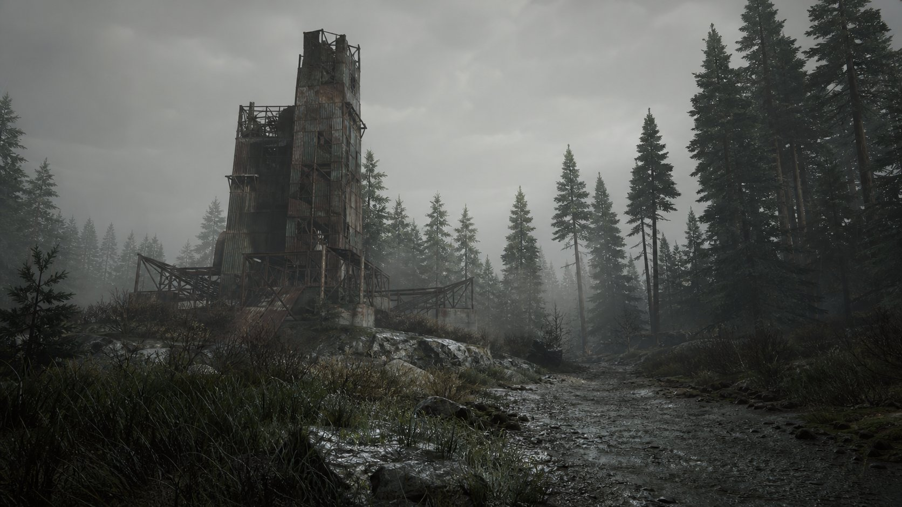
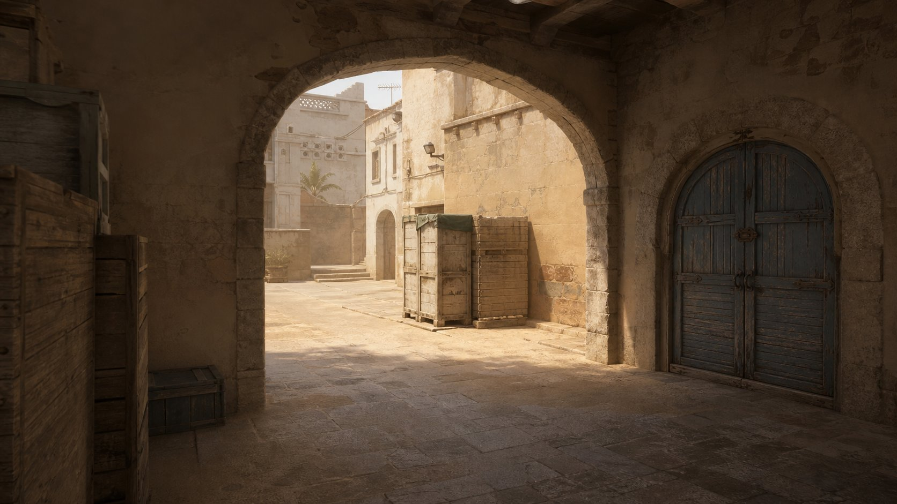

ChromaX changes what your monitor shows — never the game.
One 260 KB portable exe: saturation to 300%, scene presets, per-game looks,
crosshair, resolution & refresh, phone control.
No account. No card. No premium tier. There is nothing to unlock, because it's all open.
No — and don't take our word for it. We publish the SHA-256 of the exact file
on this page. Hash it yourself with certutil, upload it to VirusTotal,
read the report. It's a single portable exe: no installer, no drivers, no admin.
ChromaX never reads game memory, never edits game files, never injects anything.
It changes your display output — the same layer Windows Magnifier uses. What an
anti-cheat chooses to do is up to the game's rules, so check those first.
All of it. Saturation, scenes, per-game switching, crosshair, modes, phone control —
every feature is in the free binary. No account, no trial, no “pro” upsell hiding
behind a padlock.
There's nothing to cancel because there's nothing to pay. The exe runs offline,
doesn't phone home, and works with the network cable unplugged. Uninstall = delete
the file.
Works with any game set to Windowed or Borderless —
and reaches exclusive fullscreen too through the Windows colour layer. Scene presets tuned for
treelines · night maps · dark rooms · smoke & dust · snow glare · long range · bright sky.
SEE THE DIFFERENCE
Drag the line. Then push it to 300%.
Left is your monitor right now. Right is ChromaX.
Everything below updates live — this is a browser preview of the exact maths the app runs.

⇄
ORIGINAL · 100%CHROMAX · 240%
Preview only. In the app the same values go through the Windows colour matrix,
so every window — game, Discord, desktop — gets the look.
BUILT FOR YOUR GAME
Click a game. Watch it change.
Every popular shooter and survival game ships with a tuned starting point —
saturation, contrast, temperature, gamma. Tweak it live, copy the code, paste it in the app.
In the app, profiles switch themselves the moment the game opens.
RUSTLIVE
CHX-RUST-250-06-14-04
Preset codes are just text — share them, they're free like everything else.
Game names belong to their publishers; we only mean “works with”.
THE APP
Dark, quick, and — genuinely — nothing locked.
No padlocks, no “upgrade” popups, no account screen.
Every tab below is the real feature set. Try it — it works.
CHROMAX● everything is free — there is no pro version—✕
Display
Your whole-screen look. Free — no account, no card.
One look per game. Switches itself when the game opens.
Switch automatically
SAVED LOOKS
Desktop · always
Rust · RustClient.exe
CS2 · cs2.exe
Valorant · VALORANT-Win64-Shipping.exe
Tarkov · EscapeFromTarkov.exe
RUNNING NOW — CLICK TO ADD
FortniteClient-Win64-Shipping.exe
Scenes
One-click looks for the situations where colour actually wins.
Click a scene — the Display tab follows it, exactly like the real app.
Crosshair
Drawn on top of your screen, not inside the game.
Crosshair overlay

Resolution & refresh
Modes, refresh rate and stretched 4:3 — same tab as your colours.
Now: 1920×1080 @ 144 Hz (native)
2560×1440 @ 165 Hz · 16:9
1440×1080 @ 144 Hz · 4:3 stretched
1280×960 @ 144 Hz · 4:3 stretched
1920×1080 @ 240 Hz · 16:9
Windows asks you to keep a new mode — or it reverts, same as Settings.
Settings
Everything is on by default. Nothing is locked.
Start with Windows
Phone panel on this Wi-Fi
http://192.168.1.24:8777
ABOUT
ChromaX v1.0.0 · Windows 10/11 · single portable exe · no installer, no admin.
No account, no telemetry, no phone-home. Settings live in a plain config.ini.
What it never does: read game memory · edit game files · inject code · install a driver.
EVERY FEATURE · FREE
The whole toolbox. None of the paywall.
Other tools split this list into “free” and “premium”.
We shipped one binary and went outside.
◐
Saturation to 300%
100 means untouched, 300 means three times the colour — on your whole screen, at once.
◑
Any-GPU vibrance
NVIDIA, AMD or Intel — the saturation engine doesn't care who makes your card, and there's headroom past NVIDIA's own slider.
▦
Eight scene presets
Treeline, Night Ops, Snow Glare, Smoke & Dust, Dark Room, Bright Sky, Long Range, Default. One click each.
♻
Per-game auto-switch
Watches which program is in front — the same list Task Manager shows — and swaps your look by itself.
✛
Crosshair designer
Cross, dot, circle, chevron, T — size, gap, thickness, colours, outline. Drawn above the screen, off until you turn it on.
▣
Resolution & refresh
Switch modes, refresh rates and stretched 4:3 presets in the same tab as your colours. Windows confirms every change.
☀
HDR jump
One button opens Windows' own HDR switch — we don't fight the OS on advanced colour, we hand it over.
▯
Phone control
Same Wi-Fi, browser on your phone, sliders on your monitor. On only while you keep it on — off means port closed.
⌨
Hotkeys everywhere
Ctrl+Alt+arrows for saturation, 0 to reset, X for crosshair, E for the whole look. Works over any game.
◫
Per-monitor gamma
GPU gamma ramps on every display your PC drives — the colour filter rides on top of them.
⟲
Crash restore
Your original gamma is written to disk before anything changes. Kill the app in Task Manager and the screen still comes back.
⌘
Portable & quiet
One file, no installer, no admin, no telemetry, no account. Config is a readable config.ini you can delete.
HOW IT WORKS
Three layers. Zero game contact.
01
The Windows colour matrix
Saturation, brightness, contrast, temperature and hue compose into one colour matrix —
the exact API the Windows Magnifier colour filter uses. Windows lays it over the whole
screen, so every pixel under it gets the look: games, video, Discord, your desktop.
02
The GPU gamma table
A second stage writes your gamma curve straight into each monitor's lookup table with a
normal Windows call. That's why Gamma works even where the colour filter can't reach —
and why every saved original is restored on exit.
03
The foreground watch
Per-game switching reads the process in front — the same list Task Manager shows — and
listens for window changes. It never opens, reads or touches the game itself.
What ChromaX never does
Never reads or writes a game's memory.
Never changes a game's files.
Never injects code into a game — or any other program.
Never installs a driver or a service.
Never needs admin rights; it runs as your user.
Never phones home. No licence server, no account, no telemetry.
Against tools that charge for this
ChromaXTypical paid tools
Price€0 · once? never€5–16 / month, or €16 “lifetime”
Installportable exe · no admininstaller, startup entries
Source codeopen · Apache-2.0closed
File hash publishedon the download cardsometimes
OFFICIAL DOWNLOAD
One file. That's the whole install.
ChromaX comes from this page and nowhere else. Run it from
Downloads, a USB stick, wherever — it saves its config to your app data folder and
puts your screen back when it closes.
Verify it yourself before running — open Downloads in Explorer,
type cmd in the address bar, Enter, then:
certutil -hashfile ChromaX.exe SHA256
The answer must match the hash above, letter for letter. Then scan that
hash on VirusTotal and read the report yourself — unsigned files often get a couple of
heuristic guesses; that's robots guessing, not a detection you should trust over your own eyes.
WHAT'S NEW
Dated, in plain words.
v1.0.030 Sep 2026
First public build
Saturation to 300% through the Windows colour matrix, with brightness, contrast, temperature and hue.
GPU gamma per monitor, originals written to disk first — restores after a crash, not just a clean exit.
Eight scenes, per-game profiles with foreground auto-switch, crosshair designer with six shapes.
Resolution & refresh tab with stretched 4:3 presets, phone panel on port 8777, tray icon, hotkeys.
Portable single exe. No installer, no admin, no account, no network calls.
BEFORE YOU DOWNLOAD
Questions people ask first.
Is it a virus? Is it safe to install?
There is nothing to install — ChromaX.exe is a single portable file, no installer, no
driver, no admin prompt. We publish its SHA-256 on the download card; hash your copy with
certutil and compare, then look that hash up on VirusTotal and read the actual
report. Windows may say “unknown publisher” because the file isn't code-signed — that costs
money and says nothing about behaviour. The source is Apache-2.0 licensed in this repository, so
you can read what every line does.
Is it a cheat? Will I get banned?
It changes your monitor's colour pipeline, after the game has already drawn its frame.
It never reads game memory, never writes game files, never injects a DLL. That's the same
category as night-light filters, GPU control panels and monitor OSD settings. Whether some
anti-cheat tolerates any third-party program is the game publisher's call — check the
rules of the game you play. We'd rather tell you that straight than promise something
nobody can promise.
Does it work with my graphics card?
Yes: NVIDIA, AMD and Intel. The saturation, brightness, contrast and temperature run
on a Windows colour layer that doesn't care about your GPU vendor. Gamma runs through the
standard Windows gamma-ramp call on every display.
What's the catch — what's paid?
Nothing. There is no paid tier. Scenes, per-game switching, crosshair, phone control,
resolution & refresh — it's all in the free binary, because we never wrote the paywall
code in the first place. If you'd like to support it, tell someone about it.
Which games and display modes work?
Any game in Windowed or Borderless windowed mode works through the colour matrix;
exclusive fullscreen games are reached too in most titles because Windows composites them.
For best results set your game to Borderless. HDR: use the button in the Modes tab to flip
Windows' own HDR switch — SDR colour math and HDR don't mix, so we keep them separate.
How does phone control work — is it exposed?
It's a tiny web server on port 8777 that only starts when you flip the toggle, and
stops when you flip it off. It binds to your network interface, so only devices on your own
Wi-Fi/LAN can reach it — the internet cannot. Still, treat your LAN like a place you trust,
and turn the panel off when you're done.
How do I get rid of it?
Close the app — your screen restores immediately. Delete ChromaX.exe. If you made a
config, delete %APPDATA%\ChromaX. That's every trace. There's no service, no
driver, no scheduled task unless you asked for Start with Windows (Settings tab).
Your monitor is capable of 300%. Go let it.
Free, portable, open — saturation to 300% with an exe, not an account.